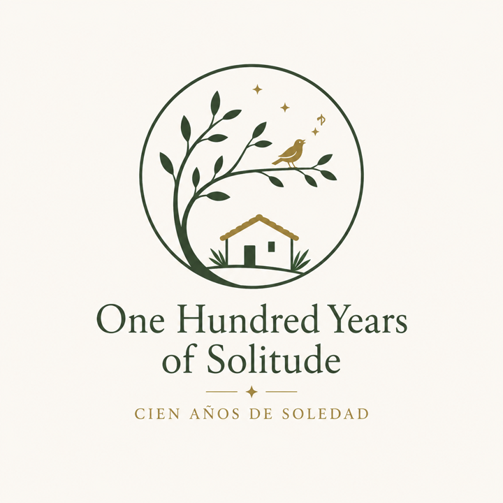

「多年以后，面对行刑队，奥雷里亚诺·布恩迪亚上校将会回想起父亲带他去见识冰块的那个遥远的下午。」

《百年孤独》
「这座镜子之城——或蜃景之城——将在奥雷里亚诺·巴比伦全部译出羊皮卷之时被飓风抹去，从世人记忆中根除，羊皮卷上所载一切自永远至永远不会再重复，因为注定经受百年孤独的家族不会有第二次机会在大地上出现。」
「在最后一刻的慌乱中，悲伤的醉汉们抬棺材出家门时弄混了，把两人各自下葬在对方的坟墓里。」
「你那么憎恨军人，跟他们斗了那么久，琢磨了他们那么久，最终却变得和他们一样。人世间没有任何理想值得以这样的沉沦作为代价。」
「不论在什么地方都要记住，过去都是假的，回忆没有归路，春天总是一去不返，最疯狂执著的爱情也终究是过眼云烟。」
「『只要上帝还让我活着，』她时常这样说，『这个净出疯子的家里就缺不了钱。』」
「乌尔苏拉没有追上吉卜赛人，却找到了丈夫在失败的远征中没能发现的通向伟大发明的道路。」
「她辛苦多年忍受折磨好不容易赢得的孤独特权，绝不肯用来换取一个被虚假迷人的怜悯打扰的晚年。」
「『科学消除了距离，』梅尔基亚德斯说，『用不了多久，人们不出家门就能看到世界上任何地方发生的事情。』」
「『别天真了，克雷斯皮，』她微笑着，『我死也不会和你结婚的。』」
「他的确一度死去，但难以忍受孤独又重返人世。」
「『告诉我女人，』他声音非常平静，『给女儿起名乌尔苏拉。』他顿了一下，重复道，『乌尔苏拉，跟她祖母一样。再告诉她如果生了男孩，就叫他何塞·阿尔卡蒂奥，但不是随他伯父的名字，而是随他祖父。』」
「在这纷乱的合奏中，皮埃特罗·克雷斯皮伏在店后的写字台上，双腕用剃刀割破，双手浸没在一盆安息香水里。」
「奥雷里亚诺·布恩迪亚上校没有显出丝毫不快，但在私人卫队将那位寡妇的家舍夷为平地化为灰烬之后，他的心才恢复平静。」
「『奥雷里亚诺，』他悲伤地敲下发报键，『马孔多在下雨。』」
「『我们还没有死人，』他说，『只要没有死人埋在地下，你就不属于这个地方。』」
「她死在圣星期四一早。人们最后一次帮她数算年龄是在香蕉公司时期，当时得出的结果在一百一十五到一百二十二岁之间。」
「它的确是一处乐土，没人超过三十岁，也没人死去。」
「他在波斯得过蜀黍红斑病，在马来群岛患上坏血病，在亚历山大生过麻风病，在日本染上脚气病，在马达加斯加患过腺鼠疫，在西西里碰上地震，在麦哲伦海峡遭遇重大海难，却都大难不死。」
「『我谁也不嫁，』她告诉他，『尤其不嫁给你。你太爱奥雷里亚诺才想跟我结婚，因为你没法跟他结婚。』」
按代际、章节和性别查看人物提及次数，保留原来的交互式章节热力表。
打开人物统计 星期与事件 星期事件统计整理 Sunday 到 Saturday 的 117 次星期词提及，按章节、星期和主题查看事件摘要。
打开星期统计 植物与章节 植物统计基于英文版整理 69 组植物、作物和香料药草词条，附对应西语名并查看章节分布。
打开植物统计 动物与章节 动物统计基于英文版整理 75 组动物词条，附对应西语名并查看鱼、鸟、家畜、昆虫等章节分布。
打开动物统计